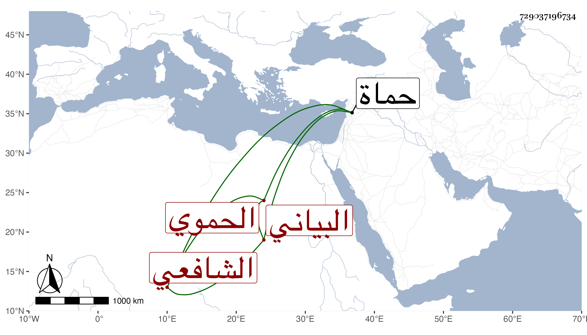

0902Sakhawi.DawLamic.ITO20230111-ara1.EIS1600.729037196734
Biography ID: 729037196734
914
محمد بن إبراهيم بن فرج الشمس أبو الخير البياني الحموي الشافعي ويعرف بابن فريجان بضم الفاء مهملة مفتوحة وجيم ونون مصغر . ولد بحماة ونشأ بها فتفقه بالزين الخرزي وبأبي الثناء محمود خطيب الدهشة ولازمه حتى سمع عليه الصحيح وكتب شرحه للمنهاج المسمى لباب القوت وسمع من بلديه الشمس بن الأشقر وانتفع بتربيته وشيخنا وآخرين وبرع وصار من فضلاء بلده مع فهم في العربية وديانة وخير لقيه العز بن فهد فكتب عنه ومات بعده بيسير في الطاعون سنة أربع وسبعين ودفن قريبا من الشيخ عبد الله بن الفرات صاحب الأحوال والكرامات رحمه الله .
